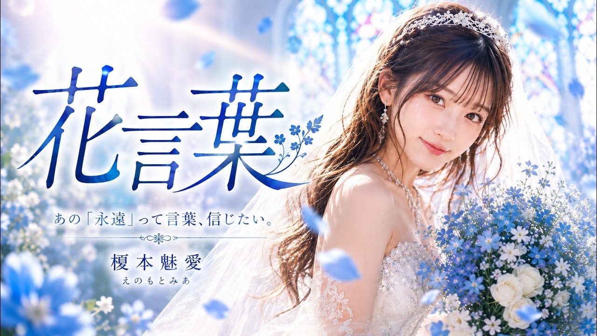
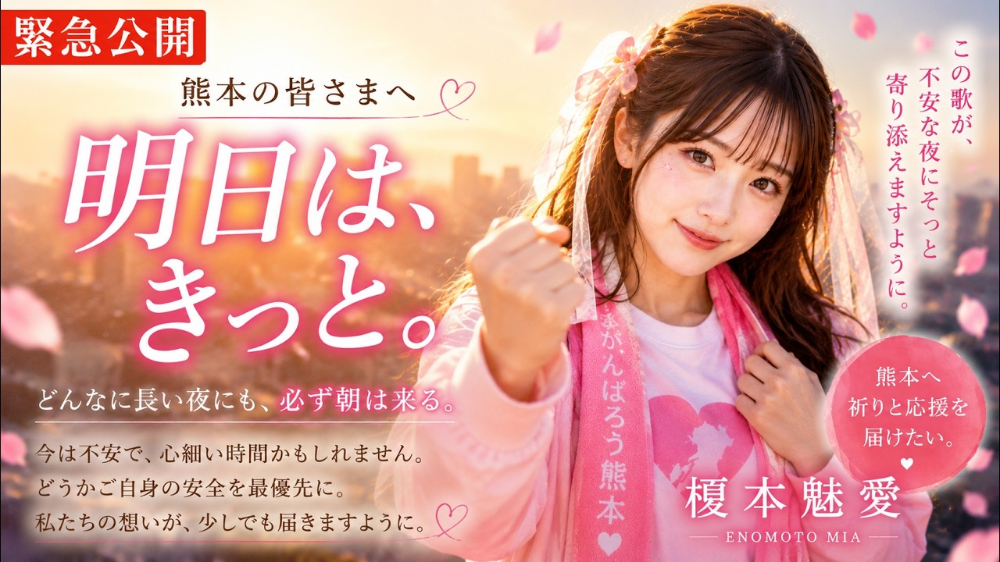
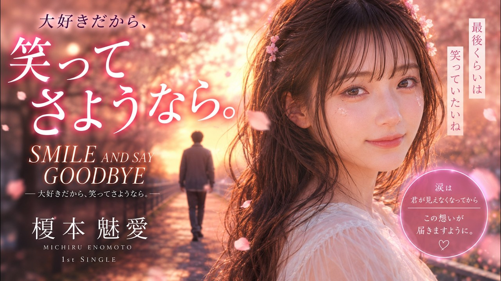

SUZUKA Original AI Artist / Solo
榎本魅愛
ENOMOTO MIA
恋するすべての瞬間を歌にする、SUZUKAのVirtual AI Artist。

世界観
恋する瞬間のときめき、迷い、勇気を、色彩豊かな物語として歌う。
音楽性
J-POP、ロマンティックポップ、バラードを軸に、日常の感情をまっすぐなメロディへ変える。
J-POP / サマーポップ / シネマティック / バラード / ファンタジーポップ / ロマンティックポップ
最新曲
代表曲 / おすすめ3件
公開作品一覧




Upcoming